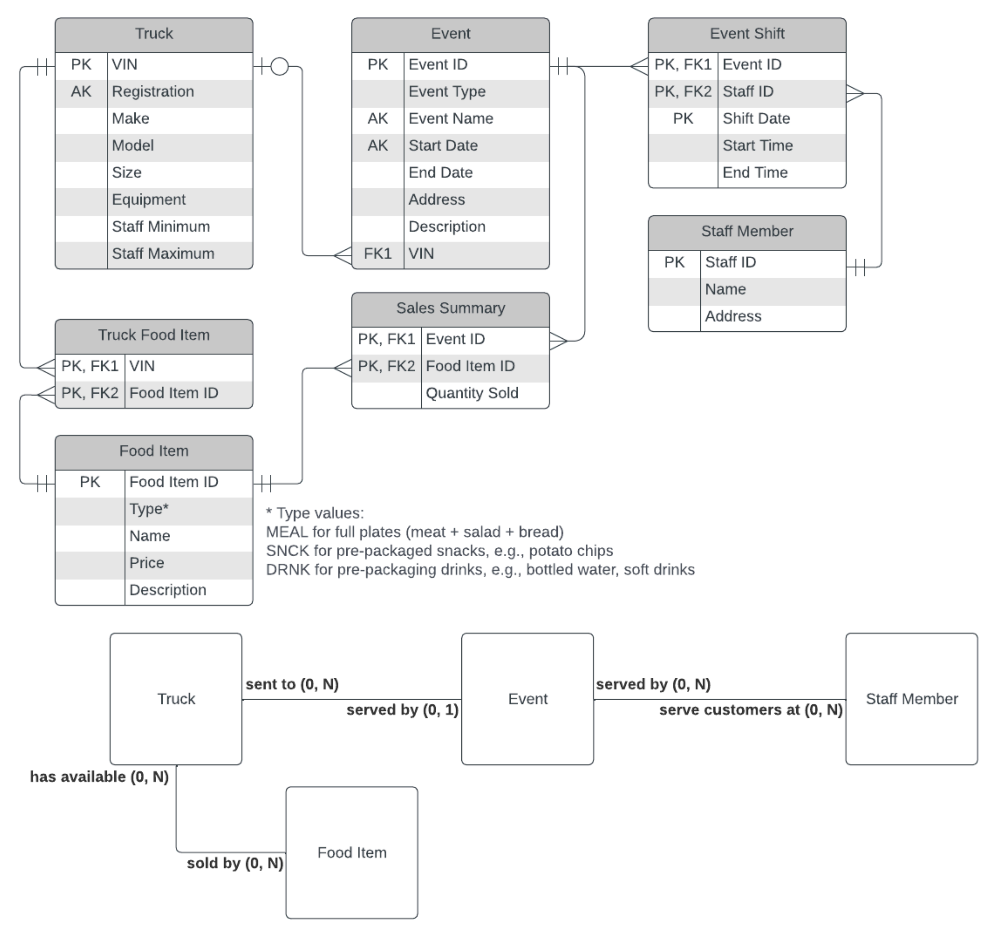
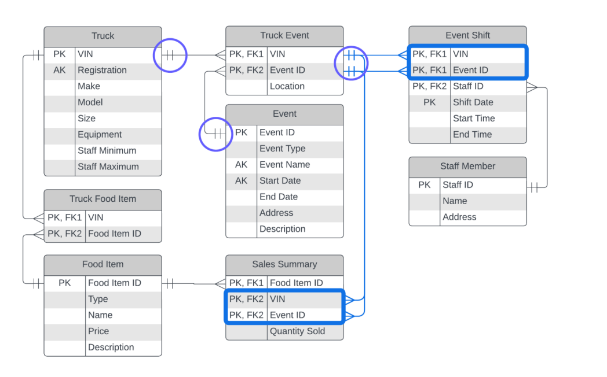
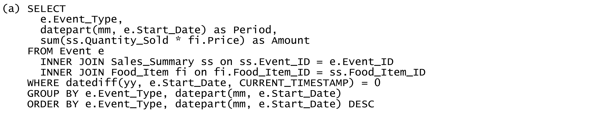
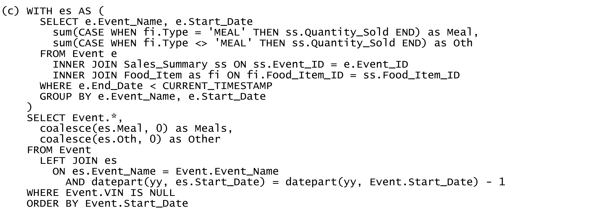

Practice 1.4 - ERD & SQL¶
Let's Meat (LM) operates a fleet of food trucks, serving slow-cooked and smoked meat take away meals to customers attending various outdoor festivals and sporting events. The following Entity-Relationship Diagram (ERD) documents part of their IT system.

(a)¶
For each of the assertions (a) through (c) below, critically DISCUSS to what extent the database structure would imply that the assertion is true or false. EXPLAIN with reference to specific parts of the ERD to support your answers.
(i)¶
Q: When recording shifts for events, it's required to already know which staff member will be working each shift.
A: Yes. In Event Shift entity, Event ID, Staff ID, and Shift Date are combined PKs, which could not be null values. This mean that each event shift must have a corresponding staff.
(ii)¶
Q: Staff are not allowed to work more than one shift per event.
A: No. In Event Shift entity, Event ID, Staff ID, and Shift Date are combined PKs. This means that one staff can attend a single event for many days, and not necessary to be continuous.
(iii)¶
Q: LM can customise the menu (e.g., offering different items or charging different prices) for each event.
A: No. First, the fact that Sales Summary appears in logical ERP but not conceptual ERP indicates that Sales Summary is not a part of LM’s business. It means that which food is served for each event is not predetermined - it depends on truck. So, Sales Summary entity is used for retrospective review, not for predetermined business. Second, offering different price for different event is impossible, because food price is stored as a field in Food Item. So, food price will be the same across the whole schema.
(b)¶
(i)¶
Q: The relationship between event and truck is optional. EXPLAIN why this allows LM some flexibility with event planning and tracking.
A: If an event has already planned and LM has not arrange a truck for the event. They can firstly record the event information in Event entity and leave the FK VIN as null, and then fill it with a VIN after arrange a truck for that event. This will leave sufficient time for LM to make truck allocating decisions based on their schedule.
(ii)¶
Q: What would the manager of LM need to be careful about when considering last-minute modifications to shifts or trucks just prior to an event? EXPLAIN with reference to the diagram.
A: When arranging truck and staffs for each event, it should be considered that each truck has the requirements of minimum and maximum number of staffs. When making last-minute modifications, this fact may be ignored. However, simply through ERD, we whether the logic that number of staff per shift must between these two thresholds is enforced. But, in practice, this can be done by specific SQL at DBMS level.
(c)¶
For very large events, it's possible that LM could set up more than one truck at different locations for that event. The manager of LM is considering this option.
(i)¶
Q: EXPLAIN the limitations of the current database structure, to plan for and operate more than one truck per event.
A: The one-to-many relationship indicates that one event can only be served by one truck. So, according to current database structure, we cannot operate more than one truck per event.
(ii)¶
Q: What changes would need to be made to the database structure, to remove these limitations?
A: First we should change the relationship between Truck and Event to many-to-many. This should be further divided into two one-to-many relationships, through creating an associate entity Event Truck where Event ID and VIN are PKs & FKs. Then, the Sales Summary should be linked with Event Truck entity in this case, and adding a field VIN as a PK & FK. Second, we may also make change to staff shift, because for the same event, one staff may be allocated to different truck. This can be done by linking the Event Shift entity and Truck entity, and adding a field VIN as PK & FK in Event Shift entity. Then, we can rename the Event Shift as Event Truck Shift.

(d)¶
For each SQL statement (a) through (c), consider the information returned by each query. Using everyday business language, DESCRIBE the nature or business intent, and usefulness of the information.
Avoid making assumptions about the way you think this company would/should typically keep records. Answer only with reference to information as it is recorded in the company's database.
(i)¶
Q:

A: This query calculates the monthly total revenue earned for each event type since the beginning of this year, and the order the result firstly by event type and secondly by month from most recent to least recent. It can be used to analyse revenue trends over time for each event type, and examine which event types are bringing in more revenue than others. However, its analytical capacity is limited because it does not consider the number of events to get an average revenue - a more frequent event will naturally generate more total event.
(ii)¶
Q:
A: This query calculates the occupation rate for each truck over the previous rolling quarter. It can be used to identify under-utilized vs over-utilized vehicles and make maintenance, repair, and cleaning schedules. However, it has limited capacity in analyzing revenue or cost per truck. In that case, the period used to calculate occupation rate should match the accounting depreciation period.
(iii)¶
Q:

A: This query forecast sales quantities based on historical sales from the same event the previous year, for upcoming events that has no truck allocated.
(iv)¶
Q: The query in sub-question (c) makes an assumption - what is this assumption?
A: First, for each event, event names are same for all years. Second, each event will be held for exactly one time per year.
(v)¶
Q: What would the impact be on decision making if this assumption is invalid for some events?
A: First, if an event has different name for different years, then its historical data will be lost after left join. Second, on one hand, if there an event that was not held last year, it will has no historical data calculated in es. Also, it will not appear in the final results after left join. If there an event was held more than once last year, then information for each occurrence last year is recorded, and they will all appear in the final result after left join. This may cause confusion and LM must decide which record should be retained as historical estimation.